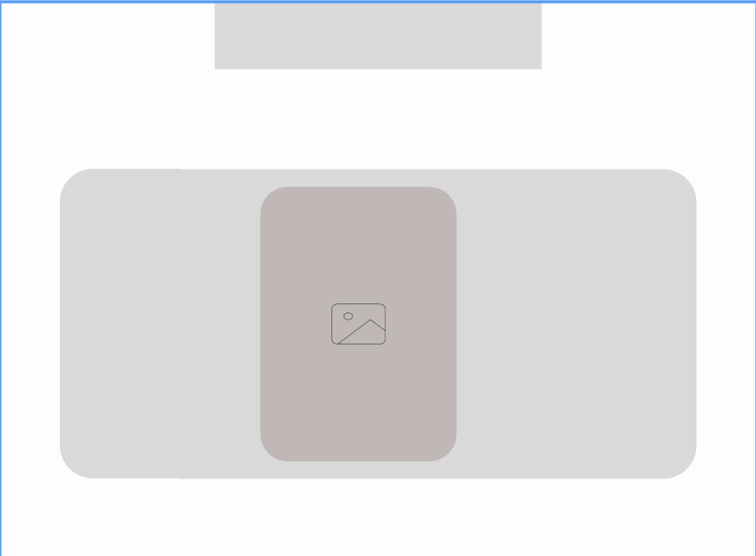
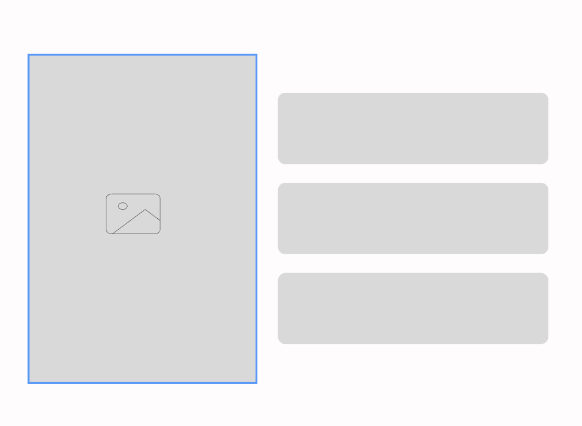
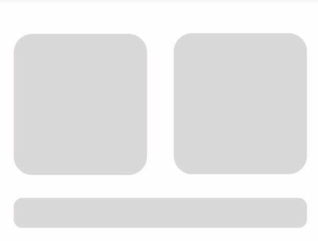

This site report shows the progress of my portfolio website for the Web Development module. The main purpose of this website is to present my skills, learning progress, and personal information in an easily understandable and organized way.
Home Page

The home page introduces the portfolio and gives a first impression. It is designed to be simple with a unique color theme.
Project Page
 The project page contains information about me and my interests. It has an organized layout which is easy to read.
Contact Page
The contact page includes information such as the languages I speak, my education, and my email address. It allows users to easily reach me and learn more about me.
Overall
While creating this website, I learned how to build web pages using HTML and CSS. The process was challenging and time-consuming, but through practice, I improved my skills. This project helped me gain confidence in web development, organize a proper portfolio, and use GitHub effectively.